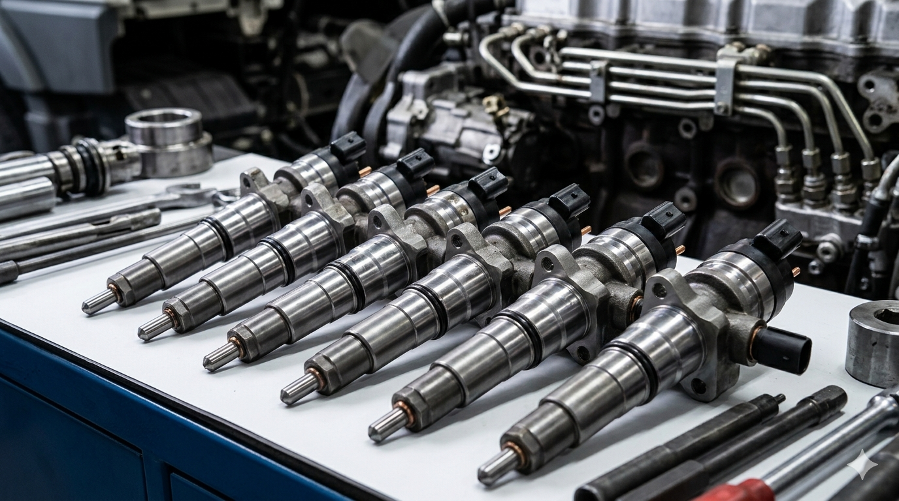

Há mais de 15 anos no mercado, a Edson Borges Mecânica Diesel oferece soluções completas para veículos pesados, com foco em desempenho, segurança e confiabilidade.
Especialistas em motores, transmissões e sistemas essenciais, entregamos serviços com agilidade, precisão e alto padrão de qualidade.
📍 R. Mal. Deodoro, 475 - Vendaval Biguaçu-SC.

Essencial para o bom funcionamento do motor, a troca de óleo reduz o desgaste das peças, enquanto os filtros eliminam impurezas, garantindo mais desempenho, proteção e durabilidade.

Realizamos manutenção completa com diagnóstico preciso, garantindo mais desempenho, economia de combustível e maior vida útil para o motor do seu veículo.

A limpeza de bicos, verificação de sensores e troca de filtros otimiza o motor, reduz consumo e poluentes, e previne danos a componentes como sensores e central eletrônica.

Revisão e reparo de câmbios para garantir funcionamento eficiente, com trocas de marcha suaves e mais segurança na operação do veículo.

Serviços de ajuste e substituição que garantem melhor desempenho, evitando desgastes e aumentando a durabilidade do sistema.

Manutenção especializada para reduzir falhas, melhorar a estabilidade e garantir mais segurança e eficiência no funcionamento do veículo.
A Edson Borges Mecânica Diesel é uma empresa familiar com atuação desde 2011, fundada em Antônio Carlos (SC) e atualmente localizada em Biguaçu. Especializada na manutenção de veículos pesados a diesel, oferece serviços com alto padrão de qualidade, prezando sempre pela confiança, transparência e excelência.
Com ampla experiência no setor, atua na manutenção de motores, caixas de transmissão, diferenciais e sistemas essenciais, garantindo desempenho, segurança e durabilidade para o seu veículo. Sua equipe é altamente qualificada e preparada para atender com agilidade e precisão.
📍 Endereço:
R. Mal. Deodoro, 475 - Vendaval
Biguaçu - SC
📞 Telefone:
(48) 99810-8117
📧 Email:
adrianborges57@gmail.com